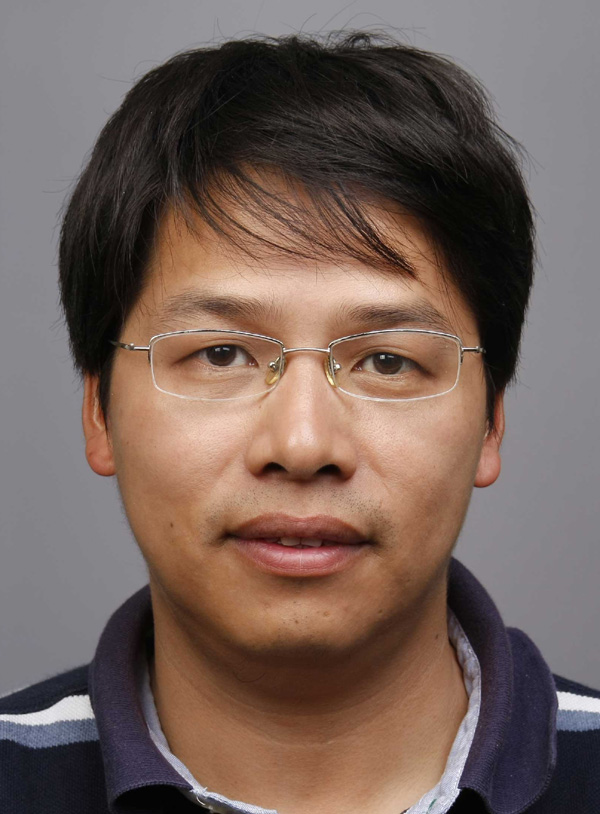
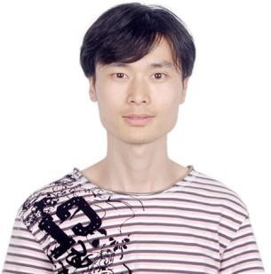

ZhouChen Lin （林宙辰，北京大学）
报告题目：Low Rank Representation-Theories and Applications
Zhouchen Lin received the Ph.D. degree in applied mathematics from Peking University in 2000. He is currently a Professor at Key Laboratory of Machine Perception (MOE), School of Electronics Engineering and Computer Science, Peking University. He is also a Chair Professor at Northeast Normal University. Before March 2012, he was a Lead Researcher at Visual Computing Group, Microsoft Research Asia. He was a guest professor at Shanghai Jiaotong University, Beijing Jiaotong University and Southeast University. He was also a guest researcher at Institute of Computing Technology, Chinese Academy of Sciences. His research interests include computer vision, image processing, computer graphics, machine learning, pattern recognition, and numerical computation and optimization. He is an associate editor of IEEE T. PAMI and IJCV, an area chair of CVPR 2014, ICCV 2015, NIPS 2015 and AAAI 2016, and a Senior member of the IEEE.
Maoguo Gong （公茂果，西北工业大学）
报告题目：多目标深度神经网络与稀疏特征学习公茂果，教授，博士生导师，西北工业大学、西安电子科技大学计算智能联合研究中心负责人，陕西省重点科技创新团队负责人。主要研究方向为计算智能理论及其在数据挖掘和图像理解中的应用。主持完成国家863计划、国家自然科学基金等十余项课题，发表SCI检索论文100余篇，被引用3000余次，获国家发明专利授权10余项，获国家自然科学奖二等奖1项、省部级科技奖励3项。曾获国家自然科学基金委“优秀青年基金”、"国家高层次人才特殊支持计划"青年拔尖人才、霍英东青年教师奖、吴文俊智能科技创新奖、陕西青年科技奖、陕西省青年科技新星、教育部新世纪优秀人才支持计划、中国高被引学者等荣誉或奖励。
Maoguo Gong （公茂果，西北工业大学）
报告题目：多目标深度神经网络与稀疏特征学习杨沛沛，博士，助理研究员。2007年毕业于浙江大学电气工程学院，获自动化专业工学学士学位；2009年毕业于华中科技大学控制科学与工程系，获控制理论与控制工程专业工学硕士学位；2013年毕业于中科院自动化所模式识别国家重点实验室，获模式识别与智能系统工学博士学位，期间曾获博士研究生国家奖学金。2013年7月留所工作至今，主要研究兴趣包括跨领域学习、半监督学习等，以及机器学习在计算机视觉中的应用。发表论文十余篇，包括Machine Learning, TCSVT, CVPR, ECML等知名国际期刊和会议，主持一项国家自然科学青年基金项目，并作为主要研究人员参与了多项面上基金项目。
JiaJun Zhang （张家俊，中国科学院自动化研究所）
报告题目：自然语言处理中的语义表示学习
张家俊，副研究员。2006年于吉林大学计算机科学与技术学院获学士学位，2011年6月毕业于中科院自动化所模式识别与智能系统专业，获工学博士学位。2011年7月至今在中科院自动化所模式识别国家重点实验室工作。2013年9月至2014年9月在微软亚洲研究院做访问学者。研究方向为自然语言处理、机器翻译、统计学习等。在人工智能与自然语言处理顶级会议AAAI、IJCAI、ACL、EMNLP、COLING，以及国际期刊IEEE/ACM TASLP， ACM TALLIP，IEEE Intelligent Systems，Transaction on ACL等发表学术论文20余篇。2009年获亚太语言信息与计算会议（PACLIC）最佳论文奖，2010年获中科院朱李月华优秀博士生奖，2012年获第一届自然语言处理与中文计算会议（NLPCC）最佳论文奖，2014年获中国中文信息学会“钱伟长中文信息处理科学技术奖”一等奖。
Qiguang Miao （苗启广，西安电子科技大学）
报告题目：待定西安电子科技大学计算机学院教授，博士生导师；2012年入选“教育部新世纪优秀人才支持计划”；NVIDA-西安电子科技大学高性能计算联合实验室副主任；陕西省计算机学会理事，CCF人工智能与模式识别专委会委员，CCF计算机视觉专业组(CCF TFCV)委员，CCF 青年工作委员会委员，CCF YOCSEF 2015-2016届副主席，CCF YOCSEF西安2010-2012届主席， IEEE会员，ACM会员， CCF高级会员，航空学会信息融合专委会委员，中国航空学会高级会员。2005年12月获西安电子科技大学计算机应用技术博士学位，2013年12月-2014年7月受国家留学基金委资助在美国做高访。
马毅，研究员，博士，国家海洋局第一海洋研究所遥感室副主任，中国海洋学会海洋遥感专业委员会副秘书长，全球变化与海气相互作用专项技术组成员，载人航天工程二级课题负责人。主要从事海岛海岸带遥感与应用研究，近年来主持国家自然科学基金、国家载人航天工程、908专项、927工程等课题多项，主持中欧国际合作课题1项。
Yufeng Li （李宇峰，南京大学）
报告题目：Learning methods for safely using unlabelled dataYu-Feng Li is currently an assistant researcher at computer science and technology department, Nanjing University. He received his B. Sc and Ph.D. degree from computer science, Nanjing University in 2006 and 2013, respectively. His research focuses on machine learning and data mining. Particularly, he is interested in semi-supervised learning, multi-instance learning, multi-label learning and statistical learning algorithms. His research works were published in JMLR, IEEE Trans. PAMI, AIJ, ICML, NIPS, AAAI, etc. He received several awards, including outstanding doctoral dissertation award from China Computer Federation (CCF), outstanding doctoral dissertation award from Jiangsu Province and Microsoft Fellowship Award. He was served as a program committee member of several conferences such as IJCAI, ICML, NIPS and KDD.
Zhenhua Guo （郭振华，清华大学深圳研究生院）
报告题目：局部纹理特征提取及其应用郭振华，博士，副研究员、硕士生导师。本科和硕士就读于哈尔滨工业大学计算机学院。2010年博士毕业于香港理工大学计算机系。同年开始在清华大学深圳研究生院工作，并于2013年晋升为副研究员。近年来一直从事模式识别、计算机视觉等方面的科研工作，尤其侧重于生物特征识别、纹理识别、视频监控等领域。授权专利5项，其中2项为美国专利。发表论文60余篇，SCI收录（含接收）21篇，并有2篇被ESI收录。成果受到国内外同行关注，据Google Scholar统计，论文引用超过1800次，多为他引。主持和参与国家自然科学基金、863等多个项目。获得多项奖励，包括深圳市青年科技奖（2014）、入选爱思唯尔2014年中国高被引学者榜单、日内瓦国际发明展金奖（2011）、深圳市后备级领军人才及海外高层次人才、香港工商业奖（2009）等。一等奖。